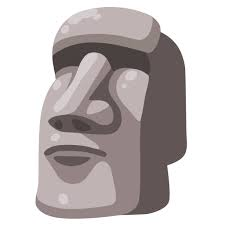
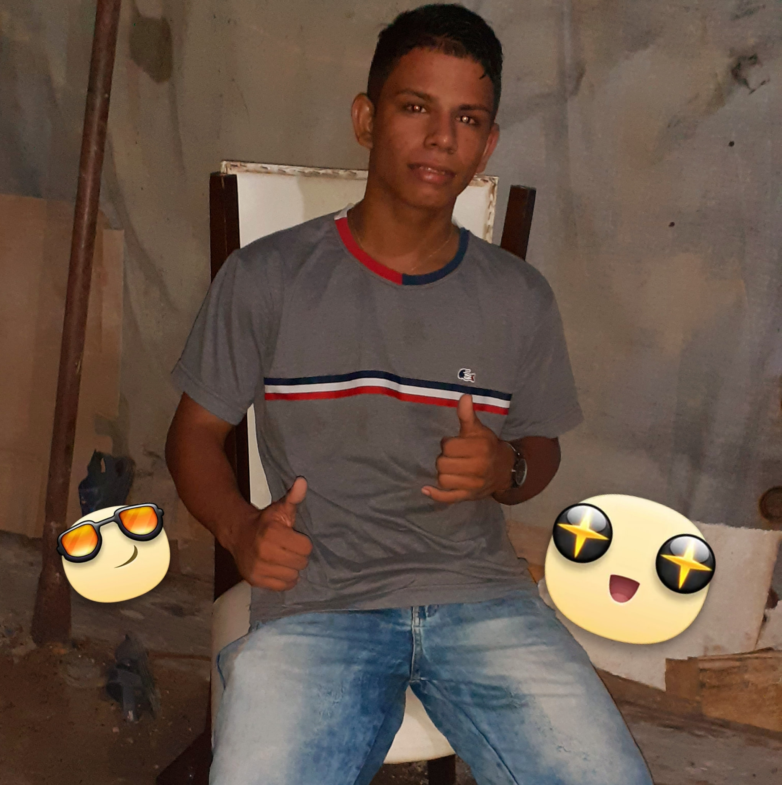

Especialista em transformar ideias complexas em interfaces dinâmicas e funcionais, sempre priorizando a performance e a acessibilidade web.

Clique para trocarSimplificando o digital através do design acessível, consistente e inteligente.

Clique para trocarTransformando lógica em inovação. Do back-end ao deploy, busco sempre a excelência técnica e a melhor experiência para o desenvolvedor.